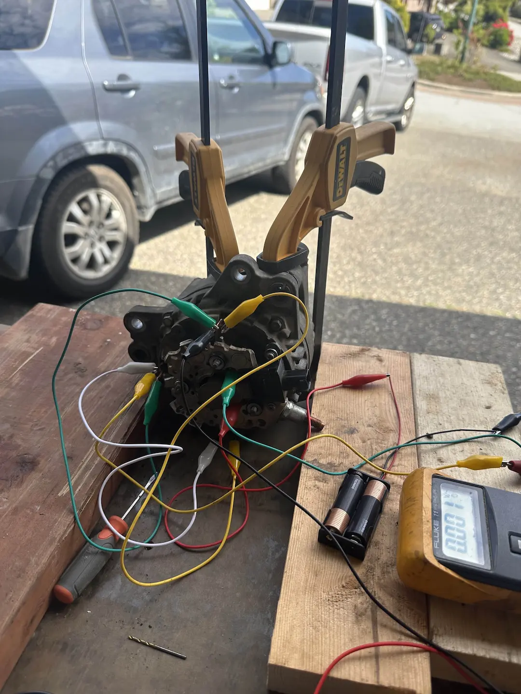
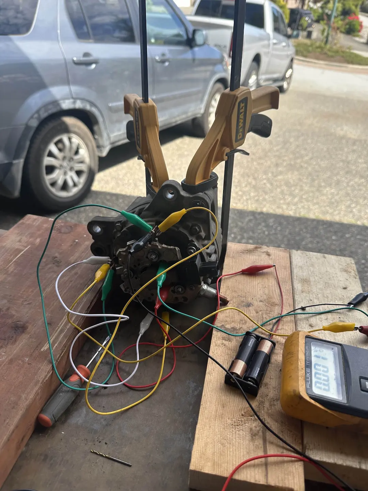
 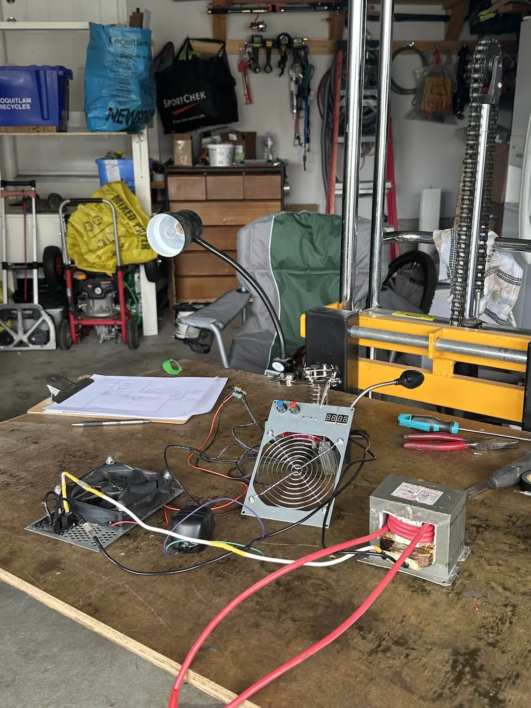
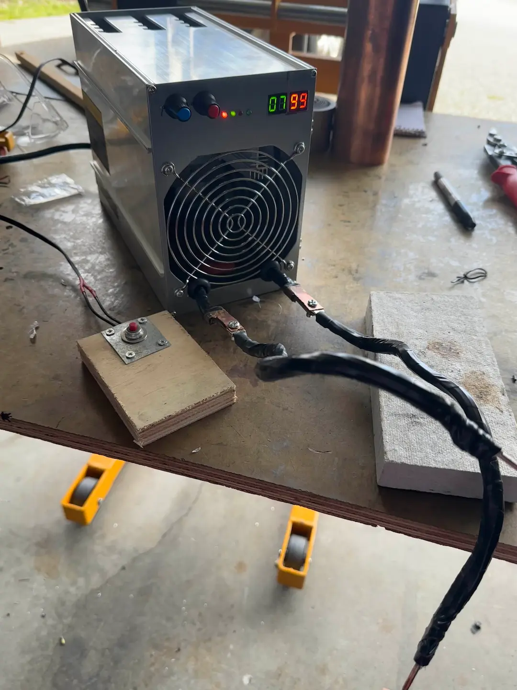
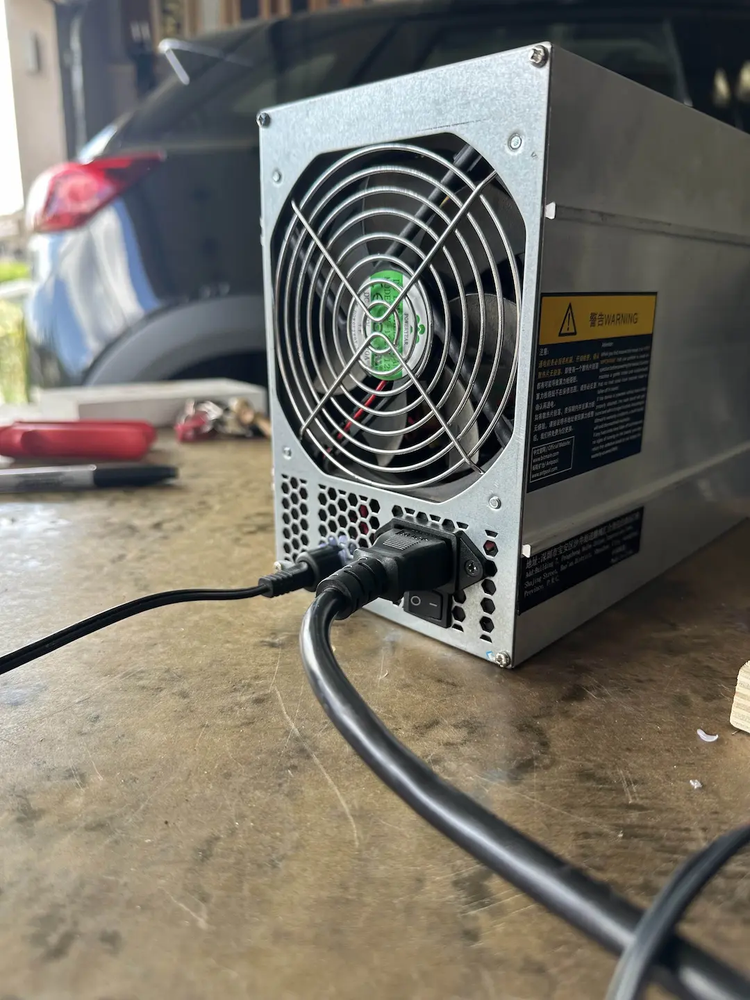
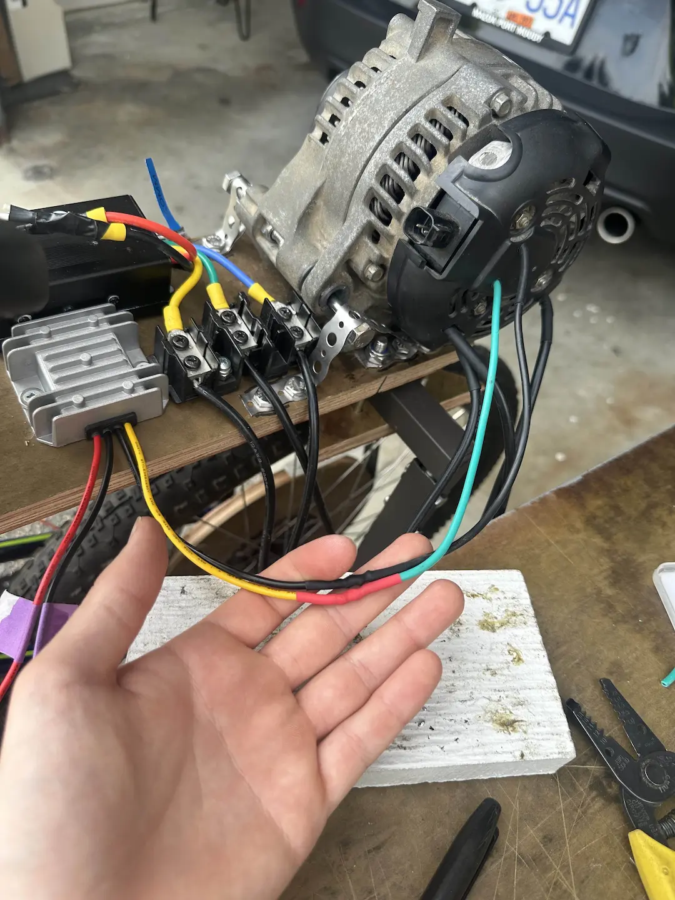
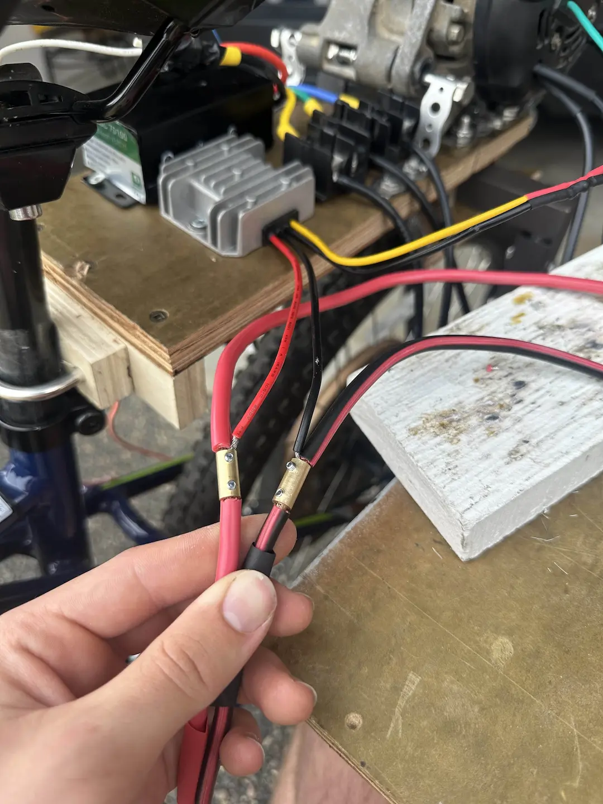
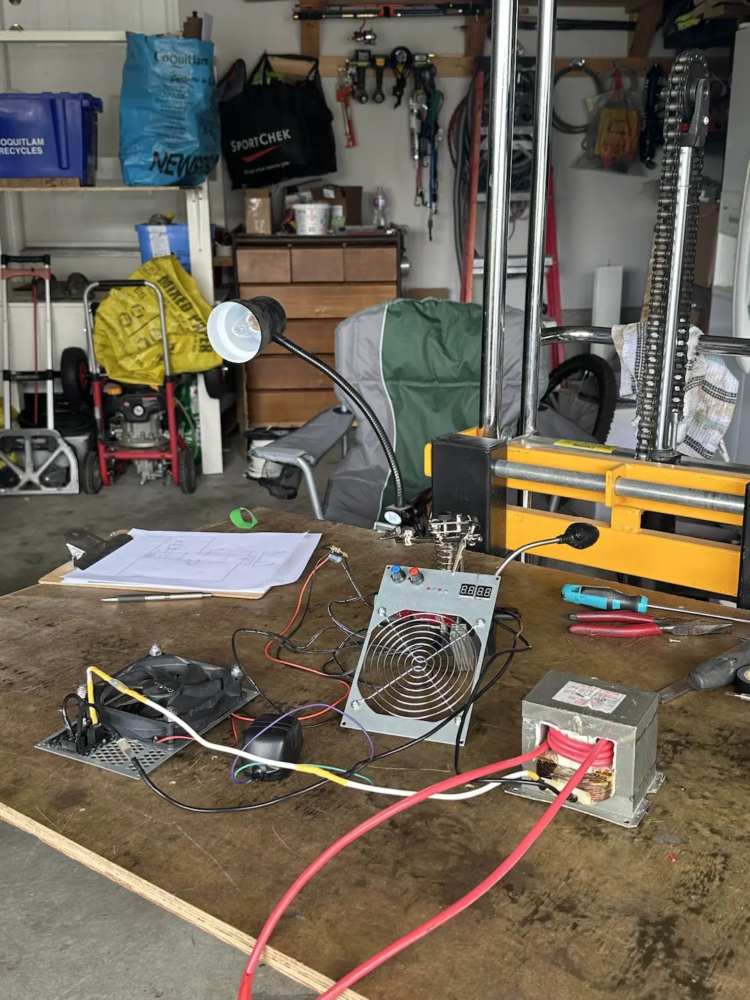
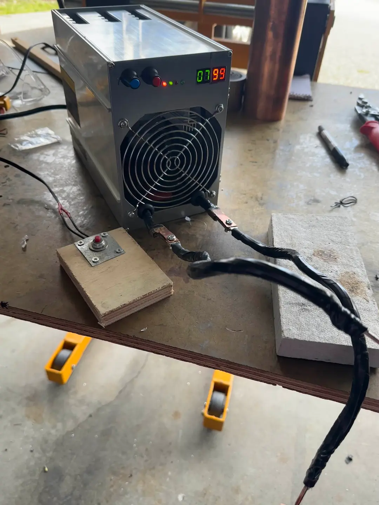
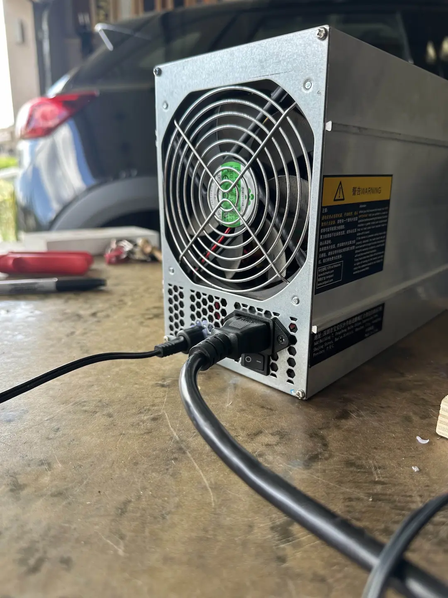
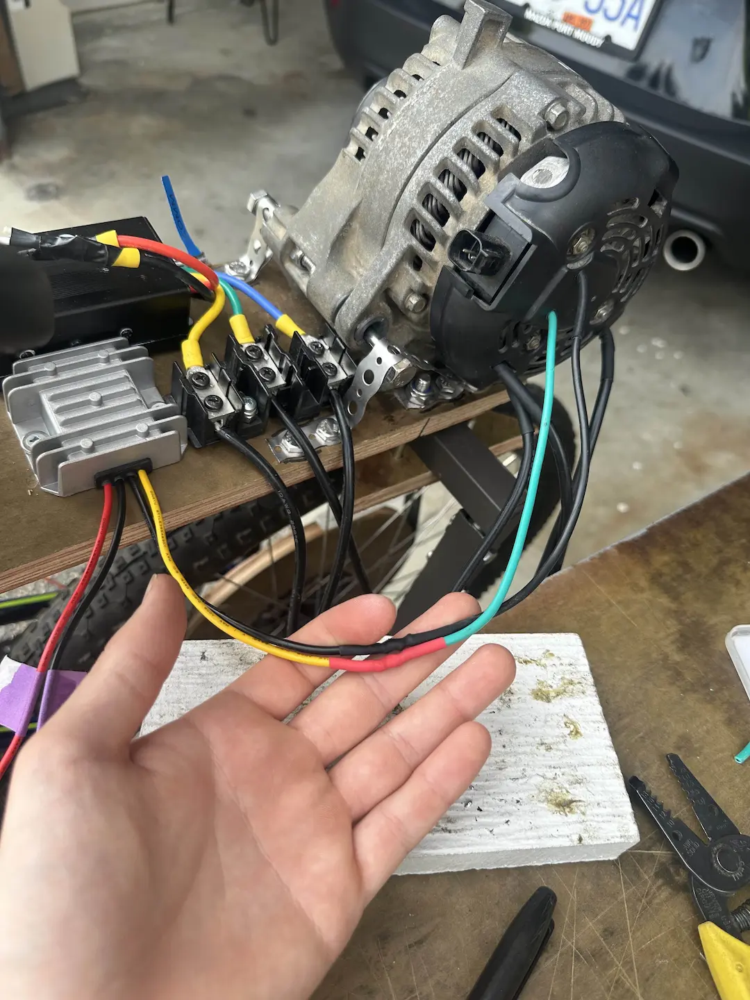
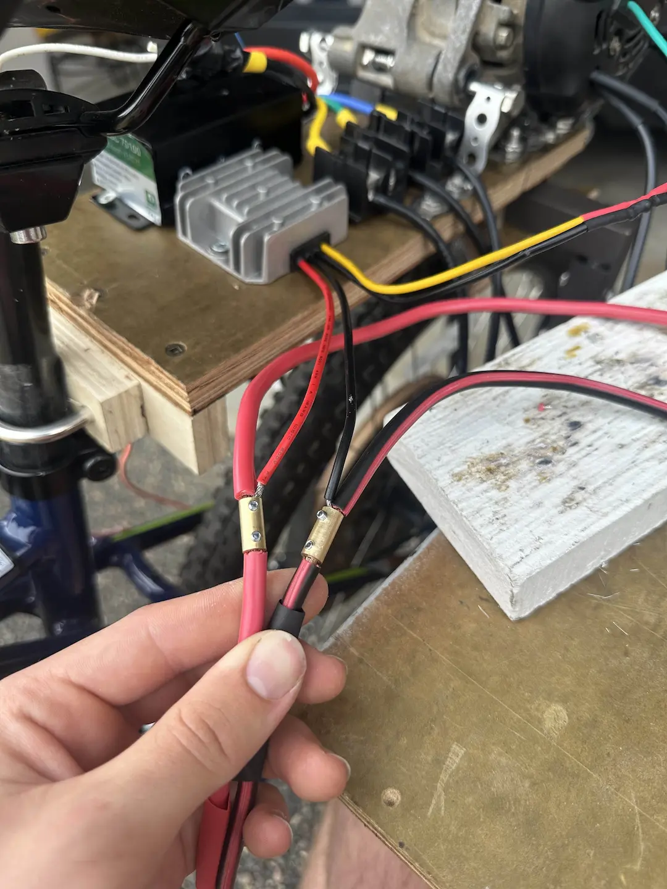
From Junkyard to Joyride — DIY Electric Bike
Built a custom high-performance e-bike from scratch on a $250 budget. Capable of 55 km/h with over 400 km of real-world testing.
- Rewired a 2012 Jeep alternator into a powerful traction motor.
- Built a 12Ah Samsung 30T battery pack with a custom spot welder.
- Programmed a VESC motor controller with custom firmware for multiple speed modes and automatic brake-based motor cutoff.
- Fabricated a steel mounting frame and 16-inch wooden belt pulley.

 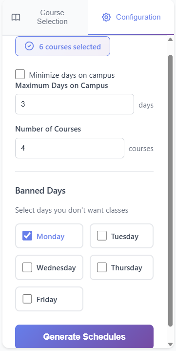
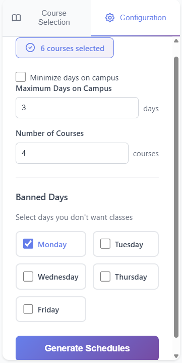
CourseCraft — SFU Schedule Optimizer
A smart scheduling tool for SFU students that uses constraint programming to automate the tedious process of manual timetable planning.
- Developed a high-performance optimizer using the Google SAT solver to minimize schedule gaps and reduce the number of days spent on campus.
- Engineered a responsive React web application providing an intuitive UI for students to set preferences and visualize their optimized timetables.
- Integrated and parsed live data from the SFU API, implementing a caching layer to ensure fast response times and up-to-date course info.

Sentiment Bot — Real-time NLP & Analytics
An advanced Discord integration that monitors community health by analyzing the sentiment of text and voice communications in real-time.
- Developed a Discord.js bot using VADER Sentiment Analysis to calculate message polarity and track user emotional trends.
- Engineered a React.js web portal featuring an Express.js REST API to visualize user statistics and dynamic leaderboards.
- Implemented Coqui STT (Speech-to-Text) integration to extend sentiment analysis capabilities to voice channels.
- Designed a MySQL relational database schema to efficiently store and query historical analysis data for long-term trend reporting.
Hidden Squirrel — 2D Escape Arcade (Course Project)
A Pac-Man inspired stealth-arcade game where a squirrel must navigate a maze while evading bears using advanced pathfinding and stealth mechanics.
- Engineered the Bear AI pathfinding using a shortest-path algorithm to create a persistent and challenging pursuit mechanic.
- Developed a procedural map generation system that ensures all generated levels are valid, playable, and free of closed loops/dead-ends.
- Implemented stealth-based randomization; when the squirrel is hidden, AI movement transitions to a randomized search pattern to simulate "searching."
- Created fluid character animations for movement and state changes, enhancing the visual feedback and game feel.
Meteor Strike — C++ Arcade Game
My first major personal project: a 2D arcade shooter inspired by classics like Asteroids, built with a focus on clean Object-Oriented design and responsive gameplay.
- Implemented the SFML (Simple and Fast Multimedia Library) for hardware-accelerated 2D graphics and spatial sound effects.
- Leveraged Object-Oriented Programming (OOP) to create a modular entity system, allowing for easy expansion of game objects and state management.
- Designed a difficulty scaling algorithm that dynamically adjusts meteor frequency and speed based on the player's score to maintain "flow state."
- Collaborated on visual design, creating custom sprites and backgrounds in Photoshop CC for a unique hand-drawn aesthetic.
- Optimized collision detection and conducted a beta test with a small group of users to refine gameplay balance and squash bugs.
Next Project Images
Your Next Coding Project
Describe your next project here. Talk about the tech stack and the problem you solved.